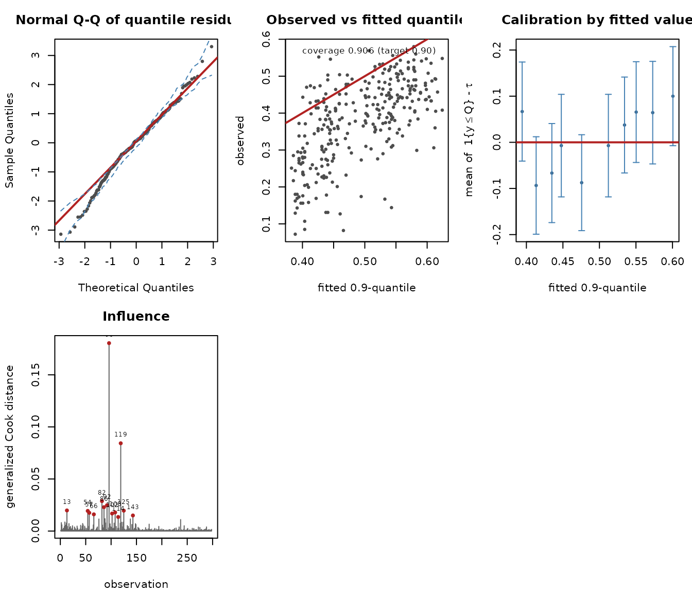
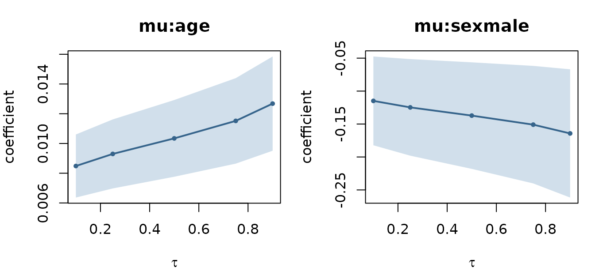

Case study: upper-quantile body-fat modelling
Source:vignettes/gkwqreg-case-study.Rmd
gkwqreg-case-study.RmdThe question
bodyfat (from unitquantreg, n = 298)
records the android fat percentage of participants along with age, sex
and physical-activity level. Android fat — the abdominal deposit — is
the fraction clinically associated with cardiometabolic risk, and the
clinical interest is in the upper tail, not the
average. A person at the 90th percentile of android fat for their
profile is the one worth flagging.
That is a quantile question, and it is the kind that mean regression answers only indirectly.
data("bodyfat", package = "unitquantreg")
str(bodyfat[, c("android", "age", "sex", "ipaq")])
#> 'data.frame': 298 obs. of 4 variables:
#> $ android: num 0.295 0.432 0.169 0.251 0.285 0.235 0.217 0.275 0.129 0.162 ...
#> $ age : int -28 -28 -28 -28 -27 -27 -27 -26 -26 -26 ...
#> $ sex : Factor w/ 2 levels "female","male": 2 1 1 2 2 1 2 1 2 2 ...
#> $ ipaq : Factor w/ 3 levels "sedentary","insufficiently active",..: 2 3 3 3 3 3 3 1 3 3 ...
range(bodyfat$android)
#> [1] 0.072 0.580The response lies strictly inside (0,1), so the Generalized Kumaraswamy family applies directly.
Fitting the 0.9-quantile
fit <- gkwqreg(android ~ age + ipaq + sex, data = bodyfat,
tau = 0.9, family = "kw")
summary(fit)
#>
#> Generalized Kumaraswamy quantile regression
#> family: kw tau: 0.9 anchor: beta
#>
#> Call:
#> gkwqreg(formula = android ~ age + ipaq + sex, data = bodyfat,
#> tau = 0.9, family = "kw")
#>
#> Quantile residuals:
#> Min 1Q Median 3Q Max
#> -3.1407 -0.5557 0.0579 0.6705 3.3032
#>
#> Conditional 0.9-quantile (link logit) -- coefficients are effects on the LOG QUANTILE ODDS log(mu/(1-mu)):
#> Estimate Std. Error z value Pr(>|z|)
#> mu:(Intercept) 0.051005 0.069069 0.738 0.46024
#> mu:age 0.012680 0.001617 7.842 4.44e-15 ***
#> mu:ipaqinsufficiently active 0.031385 0.081807 0.384 0.70124
#> mu:ipaqactive -0.010905 0.074687 -0.146 0.88392
#> mu:sexmale -0.164254 0.049657 -3.308 0.00094 ***
#> ---
#> Signif. codes: 0 '***' 0.001 '**' 0.01 '*' 0.05 '.' 0.1 ' ' 1
#>
#> alpha (link log):
#> Estimate Std. Error z value Pr(>|z|)
#> alpha:(Intercept) 1.5144 0.0482 31.42 <2e-16 ***
#> ---
#> Signif. codes: 0 '***' 0.001 '**' 0.01 '*' 0.05 '.' 0.1 ' ' 1
#>
#> Anchored parameter: beta (computed from the quantile, not estimated)
#> Log-likelihood: 287 on 6 Df AIC: -562 BIC: -539.8
#> Pinball loss: 0.01432 Pseudo-R1: 0.07911
#> Empirical coverage: 0.906 (target 0.9)
#> Covariance: expected Information condition number: 7229Reading the quantile block:
-
ageis highly significant and positive. Under the logit link the coefficient is an effect on the log odds of the conditional 0.9-quantile. -
sexmaleis strongly negative: at the same age and activity level, the upper tail of android fat sits lower for men in this sample. -
ipaqcontributes little at this quantile.
The two summary lines worth reading before anything else:
c(empirical_coverage = mean(bodyfat$android <= fitted(fit)), target = 0.9)
#> empirical_coverage target
#> 0.9060403 0.9000000The fit places 90.6% of observations below its fitted quantile against a target of 90%, and the information-matrix condition number in the summary is small, so the standard errors mean what they say.
What the coefficients are worth on the response scale
marginal_effects(fit)
#>
#> Marginal effects on the conditional 0.9-quantile (averaged over the sample)
#> dQ(tau|x)/dx_j, logit link
#>
#> variable effect std.error lower upper
#> age 0.003111 0.0003868 0.002353 0.00387
#> ipaqinsufficiently active 0.007701 0.0200692 -0.031634 0.04704
#> ipaqactive -0.002676 0.0183266 -0.038595 0.03324
#> sexmale -0.040304 0.0121486 -0.064115 -0.01649One additional year of age shifts the conditional 0.9-quantile of
android fat by the amount in the effect column — directly
interpretable, unlike the log-odds coefficient.
Choosing a family: two criteria that disagree
cmp <- suppressWarnings(
compare_families(fit, families = c("kw", "ekw", "kkw", "bkw", "beta")))
cmp
#> family anchor df logLik AIC BIC pinball converged
#> 1 beta gamma 6 301.1949 -590.3898 -568.2072 0.01443737 TRUE
#> 2 kw beta 6 286.9896 -561.9792 -539.7966 0.01432383 TRUE
#> 3 ekw beta 7 287.9018 -561.8037 -535.9240 0.01396188 TRUE
#> 4 bkw beta 8 288.0123 -560.0246 -530.4478 0.01394496 TRUE
#> 5 kkw beta 8 287.9018 -559.8037 -530.2269 0.01396189 TRUEThis is worth dwelling on, because it is the situation the
documentation warns about. AIC ranks beta first
while the pinball loss ranks it last, behind every Kumaraswamy
member. The two disagree because they measure different things: AIC
scores the whole conditional density, the pinball loss scores only the
quantile being estimated. A family can describe the bulk of the
distribution well — which is what buys it the likelihood — and still
place the 0.9-quantile worse than a rival that fits the bulk less
well.
For a quantile question the pinball loss is the criterion that matches the goal — but it must be computed out of sample, or it simply rewards flexibility:
set.seed(1)
folds <- sample(rep(1:5, length.out = nrow(bodyfat)))
cv <- sapply(c("kw", "ekw", "bkw", "beta"), function(fam) {
mean(sapply(1:5, function(k) {
tr <- bodyfat[folds != k, ]; te <- bodyfat[folds == k, ]
f <- suppressWarnings(try(gkwqreg(android ~ age + ipaq + sex, data = tr,
tau = 0.9, family = fam), silent = TRUE))
if (inherits(f, "try-error")) return(NA_real_)
pinball(f, newdata = te)
}), na.rm = TRUE)
})
round(cv, 6)
#> kw ekw bkw beta
#> 0.014742 0.014257 0.014254 0.014583Five-fold cross-validated pinball loss is the number to act on.
Where the model fits badly

Panel 5 is the one specific to quantile regression. It bins the
tau-sign residuals 1\{y_i \le
\hat Q_i\} - \tau by fitted value. Under a correctly specified
model each bin mean is zero, and the bars are 95% binomial intervals —
so a bin whose interval excludes zero is direct, distribution-free
evidence that the fit is miscalibrated in that part of the covariate
space.
Across the distribution
The effect of age need not be constant across quantiles. That is the whole reason to fit more than one.
fits <- suppressWarnings(
gkwqreg(android ~ age + ipaq + sex, data = bodyfat,
tau = c(0.1, 0.25, 0.5, 0.75, 0.9), family = "kw"))
qp <- quantile_process(fits)
plot(qp, parm = c("mu:age", "mu:sexmale"))
check_crossing(fits)
#>
#> Quantile crossing check
#> levels: 0.10, 0.25, 0.50, 0.75, 0.90
#> source: independently fitted models, one per level
#>
#> rows with a crossing: 0 of 298 (0.00%)
#> worst violation : 0.000e+00If the independently fitted levels cross anywhere,
rearrange() restores monotonicity:
Modelling the shape as well
Section 1.5 of the design notes recommends regressing the nuisance parameter on the same covariates as the quantile whenever theory does not dictate an anchor. Doing so makes the fit robust to the anchor choice, and here it also tests whether the spread of android fat varies with age:
fit_het <- gkwqreg(android ~ age + ipaq + sex | age, data = bodyfat,
tau = 0.9, family = "kw")
anova(fit, fit_het)
#> Likelihood-ratio test for Generalized Kumaraswamy quantile regression
#> tau = 0.9, anchor = beta
#> Df logLik AIC Chisq Chi Df Pr(>Chisq)
#> [1,] 6 286.99 -561.98
#> [2,] 7 321.85 -629.70 69.723 1 < 2.2e-16 ***
#> ---
#> Signif. codes: 0 '***' 0.001 '**' 0.01 '*' 0.05 '.' 0.1 ' ' 1
fa <- gkwqreg(android ~ age + ipaq + sex | age, data = bodyfat,
tau = 0.9, family = "kw", anchor = "alpha")
rbind(beta_anchor = coef(fit_het)[c("mu:age", "mu:sexmale")],
alpha_anchor = coef(fa)[c("mu:age", "mu:sexmale")])
#> mu:age mu:sexmale
#> beta_anchor 0.003873378 -0.1938826
#> alpha_anchor 0.004073733 -0.1801923With the nuisance parameter saturated, the two anchors agree closely — which is exactly the point of the recommendation: it removes the dependence on a choice you have no strong grounds to make.
Robust standard errors
If you doubt the distributional assumption but still want the
parametric fit, the sandwich estimator is available, and
sandwich/lmtest work directly:
round(cbind(model = sqrt(diag(vcov(fit))),
sandwich = sqrt(diag(vcov(fit, type = "sandwich")))), 5)
#> model sandwich
#> mu:(Intercept) 0.06907 0.04763
#> mu:age 0.00162 0.00148
#> mu:ipaqinsufficiently active 0.08181 0.06971
#> mu:ipaqactive 0.07469 0.05480
#> mu:sexmale 0.04966 0.04820
#> alpha:(Intercept) 0.04820 0.05684A large gap between the two columns is itself a specification warning.
Summary
The workflow this vignette follows is the one to reuse:
- Fit at the quantile level the question is about.
- Check empirical coverage and the condition number in
summary(). - Choose the family by out-of-sample pinball loss, not AIC alone.
- Read effects on the response scale with
marginal_effects(). - Check calibration with panel 5, not just the Q-Q plot.
- Saturate the nuisance parameters, and confirm the anchor no longer matters.